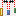
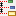
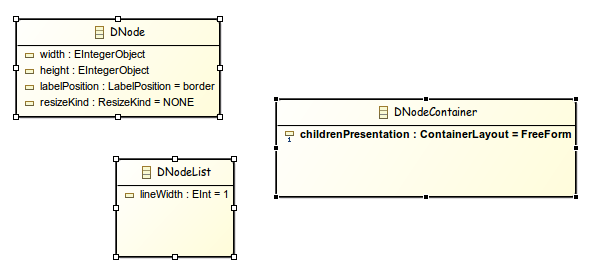

- Distribute centers evenly horizontally

- Distribute with uniform gaps horizontally 
- Distribute centers evenly vertically 
- Distribute with uniform gaps vertically

Summary: Add distribute shapes actions in diagram
| Version | Status | Date | Authors | Changes |
|---|---|---|---|---|
| v0.2 | DRAFT | 2014-09-08 | lredor | Initial version. |
| v0.3 | PROPOSAL | 2014-09-10 | lredor | Team review. |
Relevant tickets :
Distribute actions are often available in graphical/drawing soft (LibreOffice , Inskape , Visio , ...). This kind of actions is very useful and misses in Sirius.
The goal of this feature is to remedy this problem.
4 new actions allowing to distribute shapes will be added:
These actions will be available in the tabbar in a drop down menu similar to and located after the Align actions menu. The default action of this drop down menu will be Distribute Horizontally With Uniform Gaps.
They will also be in the Diagram menu from the Eclipse menu bar and in the contextual Format menu when diagram elements are selected.
They will be enabled only for selected nodes with same direct parent. At least 3 shapes should be selected to enable distribute actions.
For border nodes, they will be enabled only if all selected border nodes have the same parent and are on the same axis (top and bottom sides for horizontal actions, left and right for vertical actions). The overlap is forbidden for border nodes, so in some conditions (location already used), these actions may not have accurate results.
For all actions, the first and the last shapes do not move.
The first and last shapes do not depend on the selection order. They depend on the location of each selected shapes and the chosen action.
For horizontal distribution with uniform gaps:
For horizontal centered distribution:
For vertical distribution with uniform gaps:
For vertical centered distribution:
Information: When speaking above of the right or the bottom side, the border nodes of a shape are ignored.
With this action, the gap between centers of each selected shapes will be the same.
Initial state
Result after having launched the distribute centers evenly horizontally action
With this action, the gap between the left side and the right side of each consecutive shapes will be the same.
Result after having launched the distribute with uniform gaps horizontally action (from the same initial state)
Overlap could happen, or in other words, the gap can be negative.
Initial state

Result after after having launched the distribute with uniform gaps horizontally action
These actions are not enabled on sequence diagrams. The layout, and hence the gaps between objects, are conditioned by the model itself.
If the preference Sirius/Sirius Diagram/Automatically mark moved elements as pinned is checked, these actions have no effect on pin status (as for existing align actions).
No metammodel changes.
There will be no change in existing API.
A new drop down menu will be added to the diagram editor toolbar.
The Diagram menu from Eclipse menu bar and the contextual Format menu will be completed with the new actions.
Diagram editor documentation will be updated to describe these new actions.
At least one test for each added action.
At least one of them with zoom and scroll-bar.
One test with negative gap.
One test with 2 shapes at same axis (top, bottom, middle, left, right, center according to action launched) to check first and last shape computing
Several tests for disablement checking: 2 shapes selected, several shapes not at same level, border nodes not on same side.
These actions could be contributed to GMF through https://bugs.eclipse.org/bugs/show_bug.cgi?id=290898